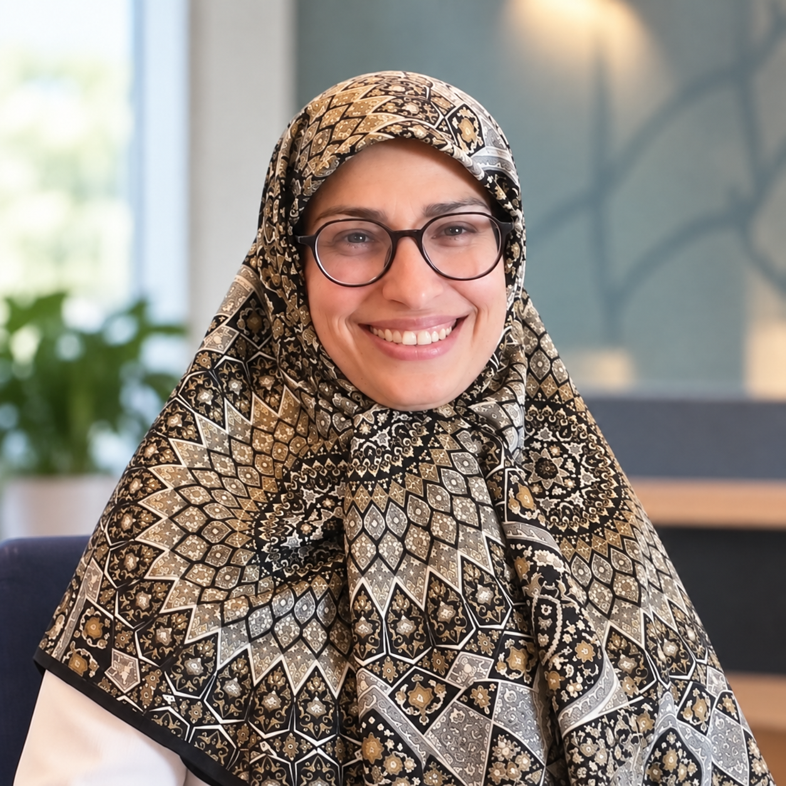

Policy implementation & evaluation
Institutional capacity, implementation gaps, policy instruments and evidence-informed evaluation.
Faculty member · University of Tehran
I am an Assistant Professor at the University of Tehran with ten years of university teaching experience. My research focuses on public policy implementation, development planning, housing, urban governance and program evaluation.
University of Tehran faculty · Teaching since 2015 · Undergraduate and graduate levels

Assistant ProfessorResearch agenda
My work examines why public policies succeed, stall or change during implementation—with particular attention to institutions, development priorities and lived urban realities.
Institutional capacity, implementation gaps, policy instruments and evidence-informed evaluation.
National vision documents, five-year development plans and the governance of long-term priorities.
Housing policy, municipal management, urban health and equitable access to public services.
Revolutions, political development and the relationship between social change and public institutions.
Research methods
Selected work
A policy-focused study of housing governance, state intervention and implementation challenges in Iran.
Doctoral research on the institutional and practical dynamics shaping policy implementation.
Peer-reviewed articles and conference presentations spanning development plans, sustainable development, housing and policy implementation. Full bibliography is being prepared.
Completed research projects
Selected research projects and advisory engagements completed for public institutions. These entries describe project-based contributions, not separate permanent employment positions.
Project-based research contribution on public policy priorities.
Project-based research on urban policy, public health, policy management and implementation.
A time-limited policy analysis and institutional research project.
Time-bound think-tank participation contributing to policy discussions and research.
Project-based research on strategic and public policy issues.
University of Tehran · 2015–present
A decade of undergraduate and graduate teaching at the University of Tehran across public policy, political development, revolutions and social movements, alongside graduate research advising.
Capabilities
Languages
Curriculum vitae
PhD in Political Science (Public Policy) · Assistant Professor at the University of Tehran · Ten years of university teaching · Selected completed institutional research projects.